컴퓨터응용밀링기능사 (2015-07-19 기출문제)
1과목: 기계재료 및 요소
1. 다음 금속 중에서 용융점이 가장 낮은 것은?
- 백금
- 코발트
- 니켈
- 주석
(정답률: 57%)

2. 다음 중 정지상태의 냉각수 냉각속도를 1로 했을 때, 냉각속도가 가장 빠른 것은?
- 물
- 공기
- 기름
- 소금물
(정답률: 76%)
3. FRP로 불리며 항공기, 선박, 자동차 등에 쓰이는 복합재료는?
- 옵티컬 화이버
- 세라믹
- 섬유강화 플라스틱
- 초전도체
(정답률: 70%)
4. 7 : 3 황동에 대한 설명으로 옳은 것은?
- 구리 70%, 주석 30%의 합금이다.
- 구리 70%, 아연 30%의 합금이다.
- 구리 70%, 니켈 30%의 합금이다.
- 구리 70%, 규소 30%의 합금이다.
(정답률: 77%)
5. 다음 중 퀴리점(curie point)에 대한 설명으로 옳은 것은?
- 결정격자가 변하는 점
- 입방격자가 변하는 점
- 자기변태가 일어나는 온도
- 동소변태가 일어나는 온도
(정답률: 69%)
6. 강력한 흑연화 촉진 원소로서 탄소량을 증가시키는 것과 같은 효과를 가지며 주철의 응고 수축을 적게 하는 원소는?
- Si
- Mn
- P
- S
(정답률: 49%)
7. 주철의 일반적 설명으로 틀린 것은?
- 강에 비하여 취성이 작고 강도가 비교적 높다.
- 주철은 파면상으로 분류하면 회주철, 백주철, 반주철로 구분할 수 있다.
- 주철 중 탄소의 흑연화를 위해서는 탄소량 및 규소의 함량이 중요하다.
- 고온에서 소성변형이 곤란하나 주조성이 우수하여 복잡한 형상을 쉽게 생산할 수 있다.
(정답률: 57%)
8. 나사에 관한 설명으로 틀린 것은?
- 나사에서 피치가 같으면 줄 수가 늘어나도 리드는 같다.
- 미터계 사다리꼴 나사산의 각도는 30°이다.
- 나사에서 리드라 하면 나사축 1회전당 전진하는 거리를 말한다.
- 톱니나사는 한방향으로 힘을 전달시킬 때 사용한다.
(정답률: 69%)
9. 너트 위쪽에 분할 핀을 끼워 풀리지 않도록 하는 너트는?
- 원형 너트
- 플랜지 너트
- 홈붙이 너트
- 슬리브 너트
(정답률: 47%)
10. 저널 베어링에서 저널의 지름이 30㎜, 길이가 40㎜, 베어링의 하중이 2400N 일 때, 베어링의 압력은 몇 MPa인가?
- 1
- 2
- 3
- 4
(정답률: 74%)
11. 한 변의 길이가 30㎜인 정사각형 단면의 강재에 4500N 의 압축하중이 작용할 때 강제의 내부에 발생하는 압축응력은 몇 N/㎟인가?
- 2
- 4
- 5
- 10
(정답률: 68%)
12. 42500 ㎏f·㎜의 굽힘 모멘트가 작용하는 연장 축 지름은 약 몇 ㎜인가?(단, 허용 굽힘 응력은 5㎏f/㎟ 이다.)
- 21
- 36
- 44
- 92
(정답률: 46%)
13. 두 축이 나란하지도 교차하지도 않으며, 베벨기어의 축을 엇갈리게 한 것으로, 자동차의 차동기어 장치의 감속기어로 사용되는 것은?
- 베벨기어
- 웜기어
- 베벨헬리컬기어
- 하이포이드기어
(정답률: 42%)
14. 원형나사 또는 둥근나사라고도 하며, 나사산의 각(ɑ)은 30°로 산마루와 골이 둥근 나사는?
- 톱니나사
- 너클나사
- 볼나사
- 세트 스크류
(정답률: 44%)
15. 다음 제동장치 중 회전하는 브레이크 드럼을 브레이크 블록으로 누르게 한 것은?
- 밴드 브레이크
- 원판 브레이크
- 블록 브레이크
- 원추 브레이크
(정답률: 71%)
2과목: 기계제도(절삭부분)
16. 표면의 줄무늬 방향의 기호 중 “R” 의 설명으로 맞는 것은?
- 가공에 의한 커터의 줄무늬 방향이 기호를 기입한 그림의 투상면에 직각
- 가공에 의한 커터의 줄무늬 방향이 기호를 기입한 그림의 투상면에 평행
- 가공에 의한 커터의 줄무늬 방향이 여러 방향으로 교차 또는 무방향
- 가공에 의한 커터의 줄무늬 방향이 기호를 기입한 면의 중심에 대하여 대략 레이디얼 모양
(정답률: 69%)
17. 베어링의 상세한 간략 도시방법 중 다음과 같은 기호가 적용되는 베어링은?
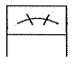
- 단열 앵귤러 콘택트 분리형 볼 베어링
- 단열 깊은 홈 볼 베어링 또는 단열 원통 롤러 베어링
- 복렬 깊은 홈 볼 베어링 또는 복렬 원통 롤러 베어링
- 복렬 자동조심 볼 베어링 또는 복렬 구형 롤러 베어링
(정답률: 40%)
18. 투상선이 평행하게 물체를 지나 투상면에 수직으로 닿고 투상된 물체가 투상면에 나란하기 때문에 어떤 물체의 형상도 정확하게 표현할 수 있는 투상도는?
- 사 투상도
- 등각 투상도
- 정 투상도
- 부등각 투상도
(정답률: 71%)
19. 구멍 치수가
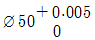
이고, 축 치수가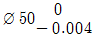
일 때, 최대 틈새는?- 0
- 0.004
- 0.0⑤
- 0.009
(정답률: 74%)
20. 완전 나사부와 불완전 나사부의 경계를 나타내는 선은?
- 가는 실선
- 굵은 실선
- 가는 1점 쇄선
- 굵은 1점 쇄선
(정답률: 53%)
21. 기계제도 도면에서 치수 앞에 표시하여 치수의 의미를 정확하게 나타내는데 사용하는 기호가 아닌 것은?
- t
- C
- □
- ◇
(정답률: 68%)
22. 다음과 같이 3각법에 의한 투상도에 가장 적합한 입체도는?(단, 화살표 방향이 정면이다.)
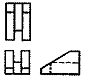
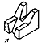
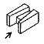
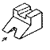
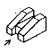
(정답률: 82%)
23. 다음 그림에 대한 설명으로 옳은 것은?
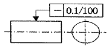
- 지시한 면의 진직도가 임의의 100㎜ 길이에 대해서 0.1㎜ 만큼 떨어진 2개의 평행면 사이에 있어야 한다.
- 지시한 면의 진직도가 임의의 구분 구간 길이에 대해서 0.1㎜ 만큼 떨어진 2개의 평행 직선 사이에 있어야 한다.
- 지시한 원통면의 진직도가 임의의 모선 위에서 임의의 구분 구간 길이에 대해서 0.1㎜ 만큼 떨어진 2개의 평행면 사이에 있어야 한다.
- 지시한 원통면의 진직도가 임의의 모선 위에서 임의로 선택한 100㎜ 길이에 대해, 축선을 포함한 평면내에 있어 0.1㎜ 만큼 떨어진 2개의 평행한 직선 사이에 있어야 한다.
(정답률: 44%)
24. 다음 기하공차에 대해 설명으로 틀린 것은?
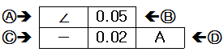
- A : 경사도 공차
- B : 공차값
- C : 직각도 공차
- D : 데이텀을 지시하는 문자기호
(정답률: 77%)
25. 도형의 한정된 특정부분을 다른 부분과 구별하기 위해 사용하는 선으로 단면도의 절단된 면을 표시하는 선을 무엇이라고 하는가?
- 가상선
- 파단선
- 해칭선
- 절단선
(정답률: 49%)
26. 센터나 척 등을 사용하지 않고, 가늘고 긴 가공물의 연삭에 적합한 연삭기는?
- 평면 연삭기
- 센터리스 연삭기
- 만능공구 연삭기
- 원통 연삭기
(정답률: 77%)
27. 구성 인선의 방지책으로 틀린 것은?
- 절삭 깊이를 적게 한다.
- 공구의 경사각을 크게 한다.
- 윤활성이 좋은 절삭유를 사용한다.
- 절삭 속도를 작게 한다.
(정답률: 66%)
28. 일반적으로 마찰면의 넓은 부분 또는 시동되는 횟수가 많을 때, 저속 및 중속 축의 급유에 이용되는 방식은?
- 오일링 급유법
- 강제 급유법
- 적하 급유법
- 패드 급유법
(정답률: 69%)
29. 연삭숫돌의 결합도는 숫돌입자의 결합상태를 나타내는데, 결합도 P, Q, R, S와 관련이 있는 것은?
- 연한 것
- 매우 연한 것
- 단단한 것
- 매우 단단한 것
(정답률: 65%)
30. 구멍의 내면을 암나사로 가공하는 작업은?/
- 리밍
- 널링
- 탭핑
- 스폿 페이싱
(정답률: 67%)
3과목: 기계공작법
31. 표면 거칠기가 가장 좋은 가공은?
- 밀링
- 줄 다듬질
- 래핑
- 선삭
(정답률: 60%)
32. 선반의 부속장치가 아닌 것은?
- 방진구
- 면판
- 분할대
- 돌림판
(정답률: 63%)
33. 연마제를 가공액과 혼합하여 압축공기와 함께 분사하여 가공하는 것은?
- 래핑
- 슈퍼 피니싱
- 액체 호닝
- 배럴 가공
(정답률: 75%)
34. 지름이 40㎜인 연강을 주축 회전수가 500rpm인 선반으로 절삭할 때, 절삭속도는 약 몇 m/min 인가?
- 12.5
- 20.0
- 31.4
- 62.8
(정답률: 49%)
35. 각도 측정용 게이지가 아닌 것은?
- 옵티컬 플랫
- 사인바
- 콤비네이션 세트
- 오토 콜리메이터
(정답률: 55%)
36. 선반작업에서 테이퍼 부분의 길이가 짧고 경사각이 큰 일감의 테이퍼 가공에 사용되는 방법은?/
- 심압대 편위에 의한 방법
- 복식 공구대에 의한 방법
- 체이싱 다이얼에 의한 방법
- 방진구에 의한 방법
(정답률: 42%)
37. 공구 마멸의 형태에서 윗면 경사각과 가장 밀접한 관계를 가지고 있는 것은?
- 플랭크 마멸(flank wear)
- 크레이터 마멸(crater wear)
- 치핑(chipping)
- 생크 마멸(shank wear)
(정답률: 53%)
38. 밀링머신에서 하지 않는 가공은?
- 홈 가공
- 평면 가공
- 널링 가공
- 각도 가공
(정답률: 64%)
39. 범용 선반에서 새들과 에이프런으로 구성되어 있는 부분은?
- 주축대
- 심압대
- 왕복대
- 베드
(정답률: 57%)
40. 일반적으로 고속 가공기의 주축에 사용하는 베어링으로 적합하지 않은 것은?
- 마그네틱 베어링
- 에어 베어링
- 니들 롤러 베어링
- 세라믹 볼 베어링
(정답률: 48%)
4과목: CNC공작법 및 안전관리
41. 선반작업에서 지름이 작은 공작물을 고정하기에 가장 용이한 척은?(오류 신고가 접수된 문제입니다. 반드시 정답과 해설을 확인하시기 바랍니다.)
- 콜릿 척
- 마그네틱 척
- 연동 척
- 압축공기 척
(정답률: 54%)
42. 사인바를 사용할 때 각도가 몇도 이상이 되면 오차가 커지는가?
- 30°
- 35°
- 40°
- 45°
(정답률: 58%)
43. 다음 중 CNC 공작기계를 사용하기 전에 매일 점검해야 할 내용과 가장 거리가 먼 것은?
- 외관 점검
- 유량 및 공기압력 점검
- 기계의 수평상태 점검
- 기계 각 부의 작동상태 점검
(정답률: 57%)
44. CNC 선반의 지령 중 어드레스 F가 분당 이송(㎜/min)으로 옳은 코드는?
- G32_ F_ ;
- G98_ F_ ;
- G76_ F_ ;
- G92_ F_ ;
(정답률: 53%)
45. 머시닝센터의 공구가 일정한 번호를 가지고 매거진에 격납되어 있어서 임의대로 필요한 공구의 번호만 지정하면 원하는 공구가 선택되는 방식을 무슨 방식이라고 하는가?
- 랜덤방식
- 시퀀스 방식
- 단순방식
- 조합방식
(정답률: 49%)
46. 다음 중 가공하여야 할 부분의 길이가 짧고 직경이 큰 외경의 단면을 가공할 때 사용되는 복합 반복 사이클 기능으로 가장 적당한 것은?
- G71
- G72
- G73
- G75
(정답률: 37%)
47. 머시닝센터에 X축과 평행하게 놓여 있으며 회전하는 축을 무엇이라고 하는가?
- U축
- A축
- B축
- P축
(정답률: 41%)
48. CNC 선반에서 지령값 X58.0으로 프로그램하여 외경을 가공한 후 측정한 결과 ∅57.96㎜ 이었다. 기존의 X축 보정값이 0.0⑤라 하면 보정값을 얼마로 수정해야 하는가?
- 0.075
- 0.065
- 0.⑤5
- 0.045
(정답률: 60%)
49. 다음 중 밀링 가공을 할 때의 유의사항으로 틀린 것은?
- 기계를 사용하기 전에 구동 부분의 윤활 상태를 점검한다.
- 측정기 및 공구를 작업자가 쉽게 찾을 수 있도록 밀링 머신 테이블 위에 올려놓아야 한다.
- 밀링 칩은 예리하므로 직접 손을 대지 말고 청소용 솔 등으로 제거한다.
- 정면커터로 가공할 때는 칩이 작업자의 반대쪽으로 날아가도록 공작물을 이송한다.
(정답률: 78%)
50. CNC 프로그램에서 피치가 1.5인 2줄 나사를 가공하려면 회전당 이송속도를 얼마로 명령하여야 하는가?
- F0.15
- F0.3
- F1.5
- F3.0
(정답률: 68%)
51. 그림과 같이 M10×1.5 탭 가공을 위한 프로그램을 완성시키고자 한다. ( ) 안에 들어갈 내용으로 옳은 것은?
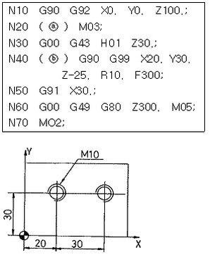
- ⓐ S200, ⓑ G84
- ⓐ S300, ⓑ G88
- ⓐ S400, ⓑ G84
- ⓐ S600, ⓑ G88
(정답률: 40%)
52. CNC 선반의 프로그래밍에서 Dwell 기능에 대한 설명으로 틀린 것은?
- 홈 가공시 회전당 이송에 의한 단차량이 없는 진원가공을 할 때 지령한다.
- 홈 가공이나 드릴가공 등에서 간헐이송에 의해 칩을 절단할 때 사용한다.
- 자동원점복귀를 하기 위한 프로그램 정지 기능이다.
- 주소는 기종에 따라 U, X, P를 사용한다.
(정답률: 53%)
53. 서보기구의 제어방식에서 폐쇄회로 방식의 속도 검출 및 위치 검출에 대하여 올바르게 설명한 것은?
- 속도검출 및 위치검출을 모두 서보모터에서 한다.
- 속도검출 및 위치검출을 모두 테이블에서 한다.
- 속도검출은 서보모터에서 위치검출은 테이블에서 한다.
- 속도검출은 테이블에서 위치검출은 서보모터에서 한다.
(정답률: 51%)
54. 다음 중 CNC 공작기계의 구성요소가 아닌 것은?
- 서보기구
- 펜 플로터
- 제어용 컴퓨터
- 위치, 속도 검출기구
(정답률: 67%)
55. 다음 중 기계원점(reference point)에 관한 설명으로 틀린 것은?
- 기계원점은 기계상에 고정된 임의의 지점으로 프로그램 및 기계를 조작할 때 기준이 되는 위치이다.
- 모드 스위치를 자동 또는 반자동에 위치시키고 G28을 이용하여 각 축을 자동으로 기계 원점까지 복귀시킬 수 있다.
- 수동원점 복귀를 할 때는 속도조절스위치를 최고속도에 위치시키고 조그(jog)버튼을 이용하여 기계원점으로 복귀시킨다.
- CNC 선반에서 전원을 켰을 때에는 기계원점 복귀를 가장 먼저 실행하는 것이 좋다.
(정답률: 61%)
56. 다음 중 CAD/CAM시스템의 출력장치에 해당하는 것은?
- 모니터
- 키보드
- 마우스
- 스캐너
(정답률: 62%)
57. 다음 중 CNC 공작기계로 가공할 때의 안전사항으로 틀린 것은?
- 기계 가공하기 전에 일상 점검에 유의하고 윤활유 양이 적으면 보충한다.
- 일감의 재질과 공구의 재질과 종류에 따라 회전수와 절삭속도를 결정하여 프로그램을 작성한다.
- 절삭 공구, 바이스 및 공작물은 정확하게 고정하고 확인한다.
- 절삭 중 가공 상태를 확인하기 위해 앞쪽에 있는 문을 열고 작업을 한다.
(정답률: 81%)
58. CNC 선반에서 주속 일정제어의 기능이 있는 경우 주축 최고 속도를 설정하는 방법으로 옳은 것은?
- G50 S2000;
- G30 S2000;
- G28 S2000;
- G90 S2000;
(정답률: 60%)
59. CNC 프로그래밍에서 시계방향 원호 보간지령을 하고자 할 때의 준비기능은?
- G01
- G02
- G03
- G04
(정답률: 70%)
60. CNC 프로그램에서 보조 기능 중 주축의 정회전을 의미하는 것은?
- M00
- M01
- M02
- M03
(정답률: 63%)